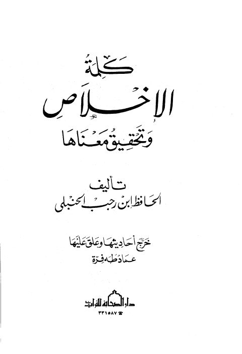

Downloads need an internet connection.
كلمة الإخلاص وتحقيق معناها- ت. فرة
Authors: ابن رجب الحنبلي
Editors: عماد طه فرة
Publishers: دار الصحابة للتراث
**▫️ العنوان: كلمة الإخلاص وتحقيق معناها- ت. فرة** ▪️ المؤلف: #الحافظ_ابن_رجب_الحنبلي ▫️ المحقق: #عماد_طه_فرة ▪️ الناشر: #دار_الصحابة_للتراث ▫️ تاريخ النشر: 1408هـ 1988م ▪️ بلد النشر: طنطا، #مصر ▫️ الطبعة: 1 ▪️ عدد الأجزاء: 1 ▫️ الصفحات: 96 ▪️ نوع الوعاء: #كتاب ▫️ التصنيف الرئيسي: #العقيدة_والمذاهب_والأديان ▪️ التصنيف الفرعي: #التوحيد ۪